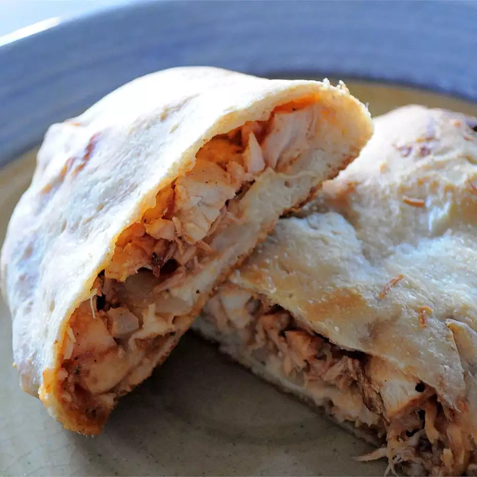

How to make calzone
Description
If you like BBQ Chicken Pizza, you'll like this easy-to-make calzone version!
Source
Ingredients
- 4 slices bacon
- ½ small onion, chopped
- 3 cups shredded, cooked chicken breast meat
- ⅔ cup barbeque sauce
- 1 cup shredded mozzarella cheese
- 2 tablespoons chopped fresh cilantro
Steps
- Preheat the oven to 400 degrees F (200 degrees C).
- Fry bacon in a large skillet over medium-high heat until crisp. Remove from the pan to drain on paper towels; crumble. Add the onion and shredded chicken to the hot bacon grease in the pan. Fry over medium heat until onion is tender. Stir in 1/3 cup of barbeque sauce, and remove from the heat. Mix in the cooked bacon.
- Roll the pizza crust dough out onto a greased cookie sheet. Press out to an even thickness, and then cut in half. Divide the chicken mixture between the two pieces of dough, spreading on only half of each piece to within 1/2 inch of the edge. Drizzle the remaining sauce over the filling. Sprinkle the cheese and cilantro over the top. Fold the uncovered portion of dough over the filling, and press the edges together with a fork to seal.
- Bake for 25 minutes in the preheated oven, or until browned to your liking. Cool for a few minutes, then cut each calzone in half. Each serving is half of a calzone. These can be served with additional barbeque sauce if you like.